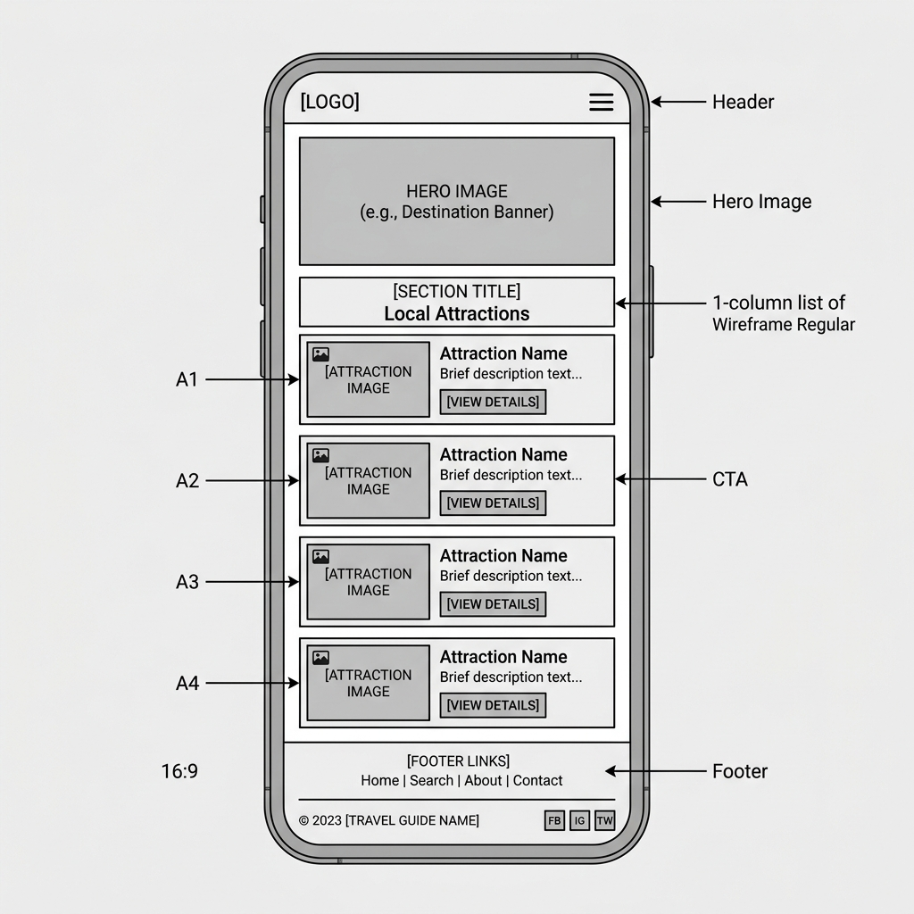
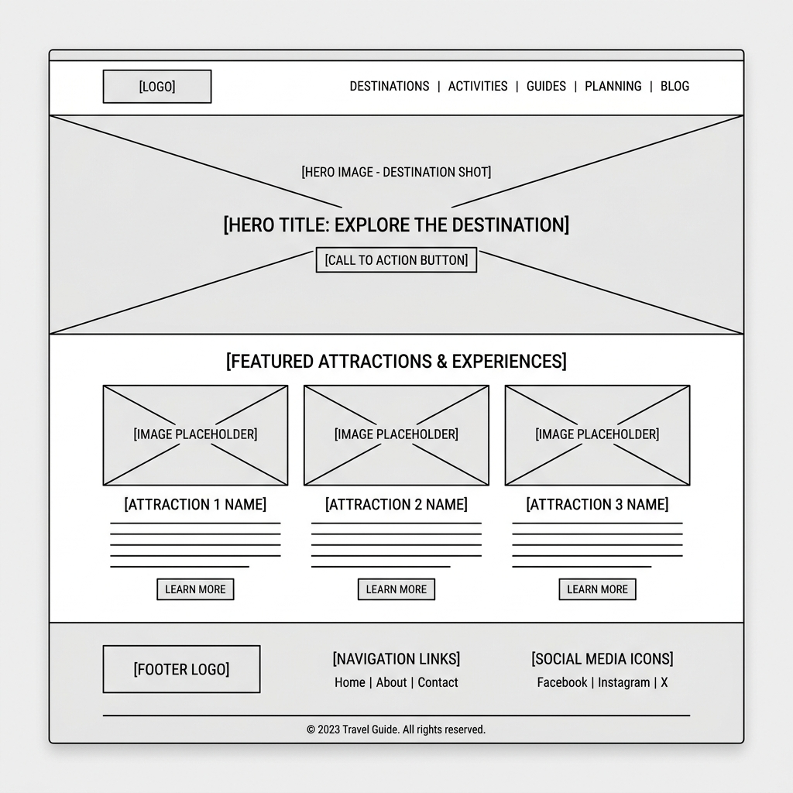

Overview
Site Name
Kyoto Explorer
I chose this name because it directly communicates the purpose of the website: exploring the historical and cultural city of Kyoto, Japan. It invites users to discover attractions, local tips, and plan their visit. It allows for a highly visual and engaging design.
Domain: kyoto-explorer.com (Optional)
Site Purpose
The purpose of Kyoto Explorer is to serve as a comprehensive visitor guide. It aims to help tourists plan their trip by highlighting the top attractions (temples, shrines, and nature), offering practical resources/tips for getting around, and providing an interactive experience like a packing list or a filterable attractions catalog.
Scenarios
- What are the best outdoor shrines and temples to visit in Kyoto during the autumn season?
- Where can I find an interactive packing list to make sure I don't forget essential items for my trip to Japan?
- Is there an easy way to filter attractions between indoor museums and outdoor hikes?
Design Strategy
Color Schema
The color scheme is inspired by traditional Japanese aesthetics, featuring a deep vermilion red (reminiscent of shrine gates) and an elegant dark charcoal, balanced with soft whites and grays. We chose this schema because it provides a strong, cultural identity while ensuring readable contrast.
- Primary Color (Vermilion Red - #E63946): Used for accents, buttons, and prominent headings to draw attention.
- Secondary Color (Charcoal Dark - #2B2D42): Used for dark mode backgrounds, footer, and navigation bar to provide a sleek, modern look.
- Background Color (Off-White - #F8F9FA): Used for the main body background to keep the content readable and clean.
- Text Color (Dark Gray - #333333): Used for standard paragraph text.
Typography
The typography pairs a modern sans-serif for readability with an elegant serif font to reflect the cultural depth of Kyoto.
- Heading Font: 'Noto Serif JP', serif - This font will be used for all
<h1>,<h2>, and<h3>tags. It provides an elegant, traditional feel suited for a Japanese cultural guide. - Paragraph Font: 'Roboto', sans-serif - This font will be used for standard body text, lists, and navigation links. It is highly readable across different devices.
Wireframes
Below are the wireframes for the Home Page layout in both mobile and desktop views. It features a hero image, a quick navigation section, and a preview of attractions.
Mobile Wireframe

Desktop Wireframe
